Mentor Docente
Contenido teórico/práctico de esta especialidad de la mentoría.
Si usted no tiene una destreza desarrollada en la realización de sesiones de acompañamiento al desarrollo humano, le recomendamos que este contenido sea acompañado con la guía de un «Teacher Mentor» de la Academia Global.
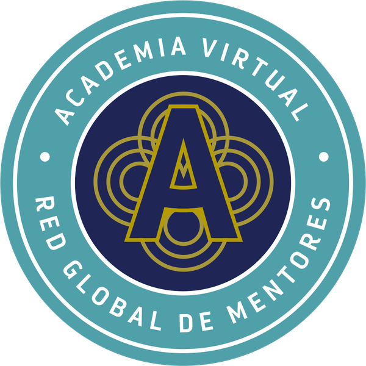
¿Prefieres comenzar acompañado/a?
Para iniciar este recorrido y si lo consideras necesario, nos ponemos a disposición para que tengas una videollamada con uno de nuestros Mentores Docentes y que pueda explicarte el proceso de formación.
Solicita la entrevista por WhatsApp: +54 9 341 5421624.
Proceso formativo y desarrollador · Mentores Docentes
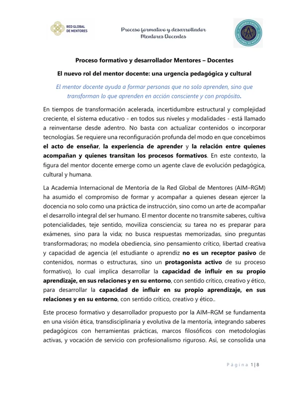
Contenido curricular
El objetivo de este módulo es ofrecer a los Mentores Docentes un conjunto de marcos, metodologías y herramientas pedagógicas que les permitan acompañar procesos de formación con un enfoque integral y transformador. Se busca que la docencia trascienda la simple transmisión de conocimientos, para convertirse en un espacio de presencia, vínculo y propósito, donde enseñar sea también sembrar cultura, conciencia y legado.
Durante este recorrido, cada Mentor Docente deberá ir elaborando su propio Modelo de Mentoría Docente, integrando las dimensiones trabajadas: vocación, ética, escucha activa, arte de la pregunta, diseño de trayectorias de aprendizaje y evaluación formativa. Tendrá libertad para profundizar en los aspectos que más resuenen con su identidad y estilo, sin que ello implique estandarizar rígidamente la práctica.
El propósito no es uniformar la manera de enseñar o acompañar, sino brindar un mapa de posibilidades que cada mentor pueda adaptar a la diversidad de contextos, estilos y necesidades de los estudiantes. El modelo que construya debe contar con una estructura clara, pero a la vez mantener la flexibilidad necesaria para fomentar la autonomía, la creatividad y el pensamiento crítico en los aprendices.
Para alcanzar la certificación, cada Mentor Docente deberá presentar un Modelo de Mentoría Docente estructurado y flexible, además de aprobar el examen teórico y filosófico de la disciplina, demostrando así su capacidad de transformar el aula en un espacio de crecimiento humano y de construcción de futuro.
Le invitamos a leer el «Proceso formativo y desarrollador»
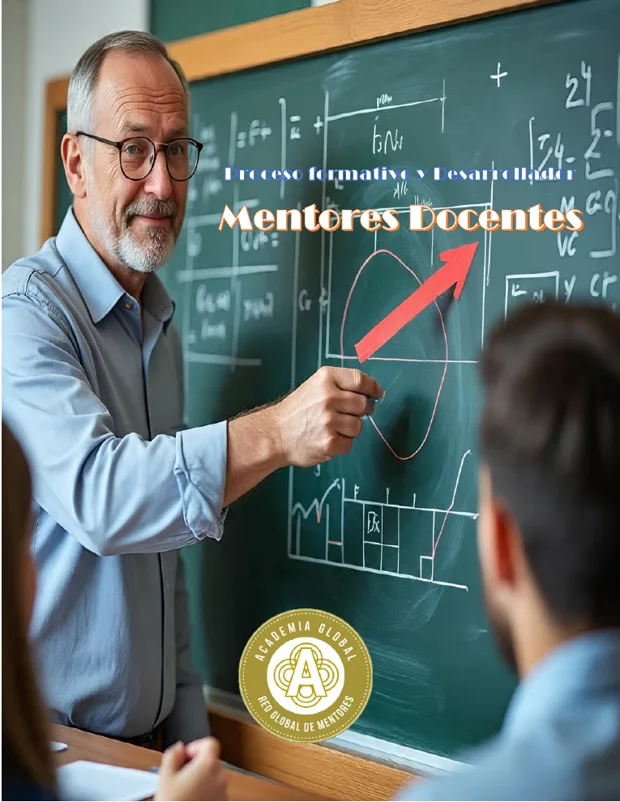
Proceso formativo y desarrollador · Mentores Docentes
En este documento podrás encontrar una propuesta transformadora para la educación: el Proceso Formativo y Desarrollador de Mentores Docentes. No se trata de un curso convencional, sino de un recorrido vivencial en el que descubrirás cómo pasar de ser un transmisor de contenidos a convertirte en un arquitecto del aprendizaje y catalizador del desarrollo humano.
A través de diez diálogos estructurados, se abordan temas como la vocación docente, la escucha activa, el arte de la pregunta, el diseño de trayectorias formativas y la evaluación con sentido. Cada fase combina teoría, práctica, reflexión y construcción de una bitácora personal, invitándote a elaborar tu propio Libro del Mentor Docente.
Leer este material es una invitación a repensar la docencia con propósito, ética y legado. Te animamos a sumergirte en sus páginas y dejarte inspirar para transformar tu práctica educativa.
Habitar el llamado a ser Mentor docente
Diferencias entre instrucción, educación y desarrollo. Introducción a los tres roles del mentor docente. Bitácora de vocación. Inicio de lectura de la Guía Maestra.
Conexión Guía Maestra de Mentoría: introducción general de la guía y definición del mentor. Inicio del estudio personal del Capítulo 1 y 2 del manual.
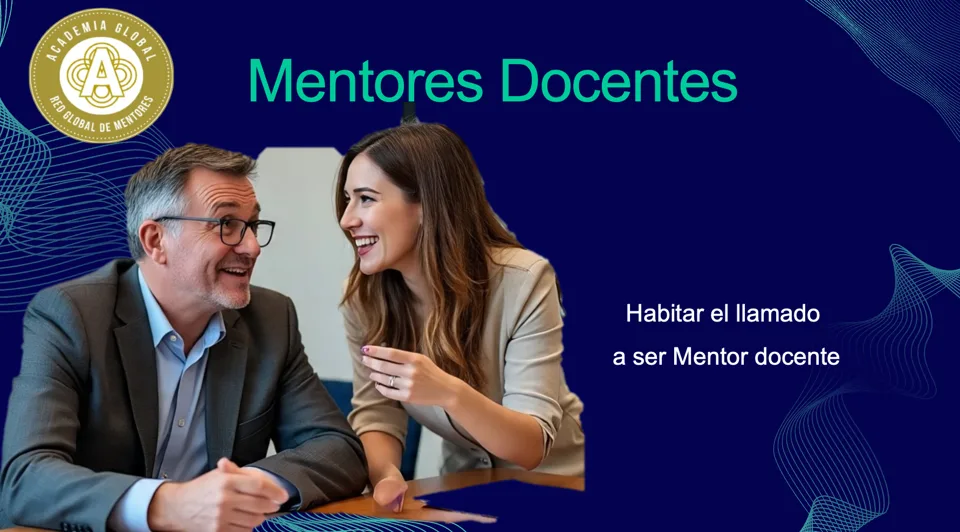
De la función al sentido
Tríada didáctica: problema, objeto, objetivo. El papel ético del docente como diseñador de experiencias. Prácticas de escucha y presencia.
Conexión GMM: estudio dirigido del Capítulo 3: Principios éticos y filosóficos del mentor. Reflexión escrita.
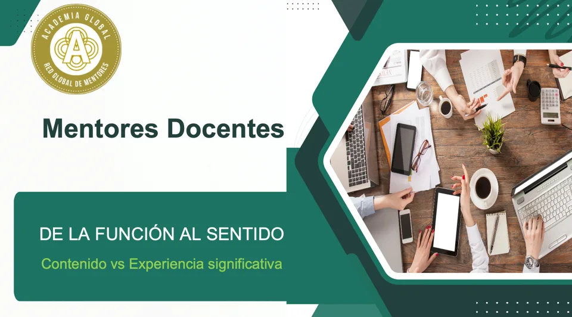
Del saber al ser
Diferencias entre enseñar, formar, acompañar y mentorear. Niveles de aprendizaje: reproductivo, productivo, creativo. Experiencias de formación con legado.
Conexión GMM: lectura y aplicación del Capítulo 4: El mentor como catalizador del desarrollo humano.
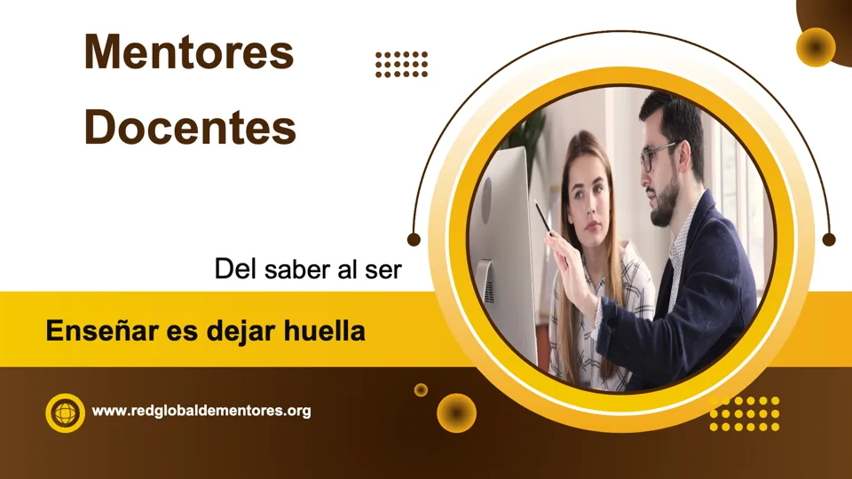
La escucha como base del aprendizaje significativo
Fundamentos del aprendizaje significativo. Función mediadora del docente. Técnicas de escucha y proalimentación constructiva.
Conexión GMM: Capítulo 6: Habilidades clave del mentor. Enfoque en la escucha, la empatía y la regulación emocional.
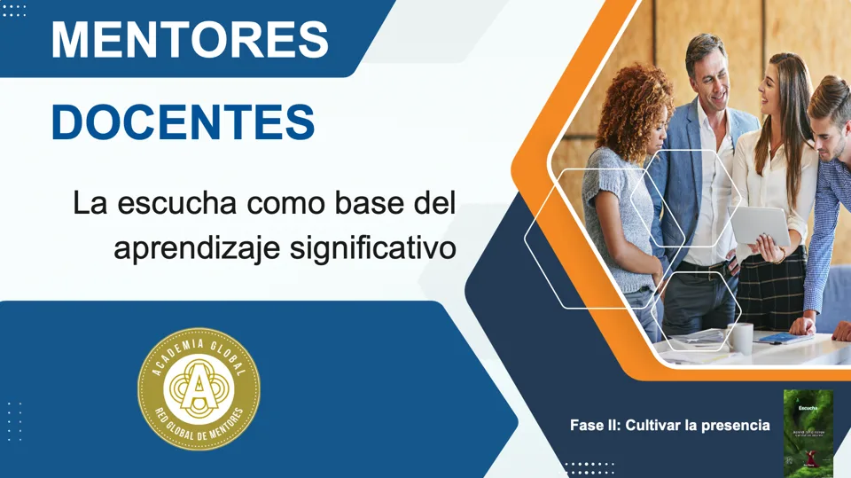
Transformar a través de la indagación
La pregunta como disparador del pensamiento. Cuadro de niveles de preguntas. Andamiaje. Didáctica de la indagación.
Conexión GMM: Capítulo 7: Diseño del método personal de mentoría. Aplicación práctica.
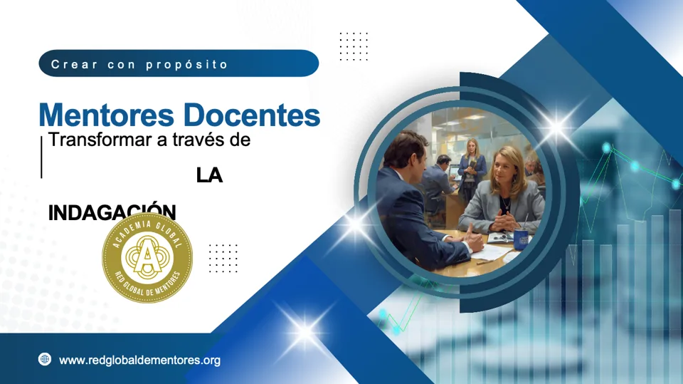
Diseñar trayectorias
Estructura del diseño: contenido – método – forma. Estrategias de aprendizaje cooperativo. Trayectorias de aprendizaje y autonomía.
Conexión GMM: Capítulos 8 y 9: Modelos de sesión, procesos estructurados y adaptación a contextos.
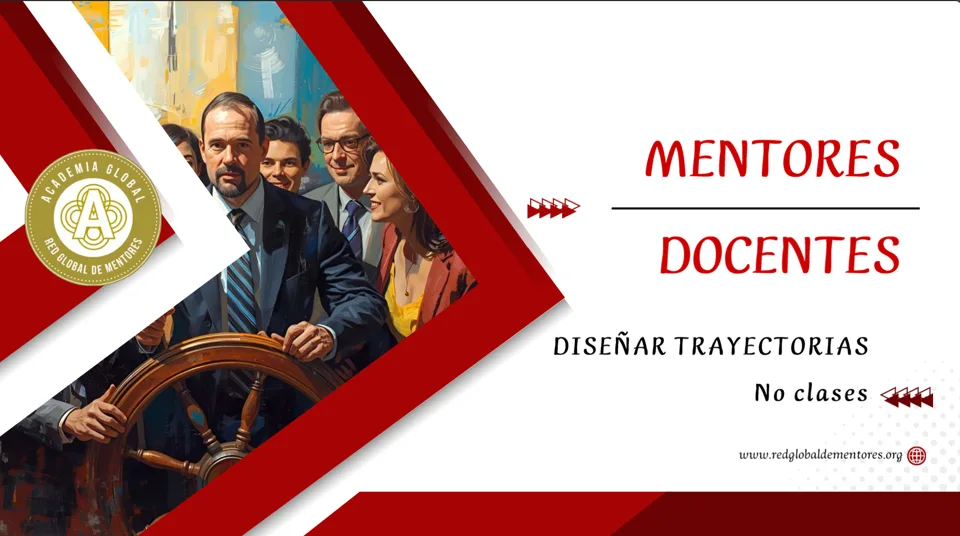
Vínculo y propósito
Vínculo pedagógico. Clima de aula. Liderazgo pedagógico y estilos de intervención.
Conexión GMM: Capítulo 10: Mentoría en acción. Capítulo 11: Propósito y transformación.
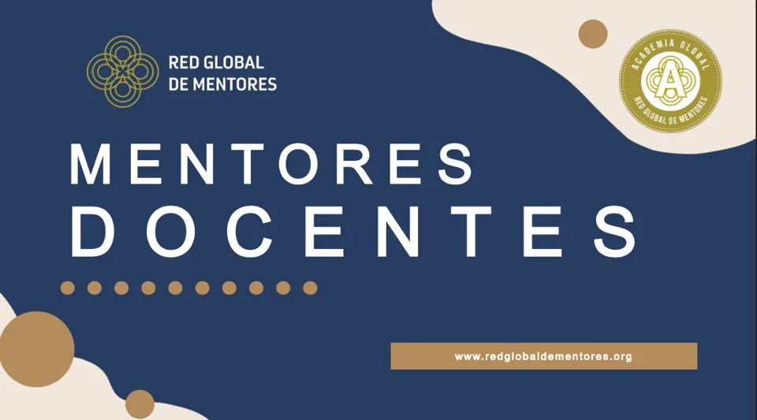
Evaluación con sentido
Tipos de evaluación. Evaluación como mediación. Portafolio del estudiante y bitácora del mentor.
Conexión GMM: Capítulo 12: Construcción de una propuesta de valor diferencial.
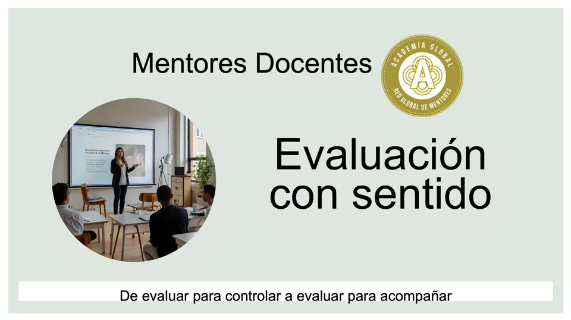
Legado y transformación
Cultura institucional, comunidad de aprendizaje. Proyectos de vida educativa. Legado pedagógico y mentoría continua.
Conexión GMM: Capítulos 13 y 14: Legado, impacto y mentoría en la era digital.
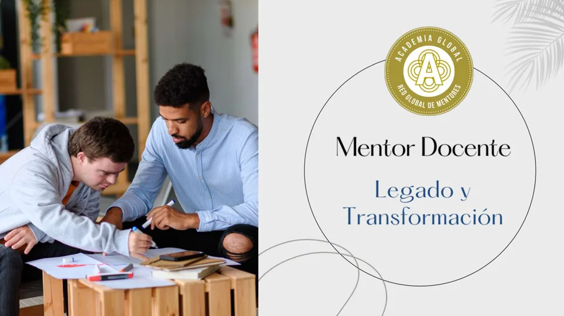
Integración final
Entrega de bitácoras, declaración de propósito, círculo simbólico. Integración final de lo aprendido.
Conexión GMM: Capítulo 15: Evaluación del impacto y sostenibilidad. Revisión global de aprendizajes en toda la guía.
Manual del Mentor Experto en Educación Continua
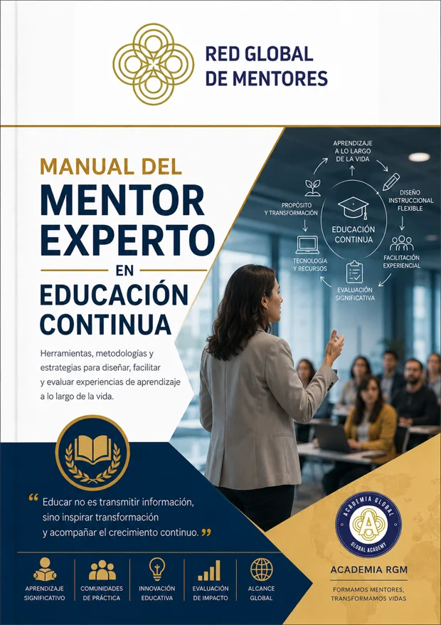
Manual funcional
Antes de finalizar este recorrido, te invitamos a consultar este Manual Funcional. Nuestro propósito es que no solo adquieras herramientas para el ejercicio de la mentoría, sino que también comprendas en profundidad las problemáticas del ecosistema educativo que esta disciplina permite resolver.
En este manual se describen los principales desafíos que enfrentan con frecuencia las instituciones educativas, y cómo puedes abordarlos a través de la propuesta de valor que desarrollarás como «Mentor Experto en Educación».
Tu capacidad para diseñar soluciones concretas para este sector será la clave de tu éxito comercial y profesional.
¿Quieres certificarte?
Si completaste tu formación y quieres obtener tu certificación, ingresa a la Plataforma de Certificación. Allí podrás completar un formulario para que el equipo de la Academia Global te contacte y agende una videollamada explicativa sobre el proceso.
Tu camino hacia la certificación como Mentor Experto en Educación Continua
Ya recorriste los 10 diálogos formativos junto al Dr. Nelson de J. Rueda Restrepo. Ahora solo te falta un paso para convertir ese recorrido en tu certificación oficial.
¿En qué consiste la certificación?
No hay examen ni instancias adicionales. Tu certificación se obtiene entregando la Bitácora que fuiste construyendo a lo largo de los 10 encuentros —tu propio Libro del Mentor Docente—, donde quedó registrado tu Modelo de Mentoría Docente: tu vocación, tu ética, tu forma de escuchar, de preguntar y de acompañar procesos de aprendizaje.
Esa Bitácora es la evidencia de tu transformación: de transmisor de contenidos a Mentor Experto en Educación Continua, capaz de acompañar procesos formativos con propósito, presencia y legado.
Últimos pasos para certificarte
Si ya completaste tu entrevista de cierre:
- Abona tu matrícula de certificación (si aún no lo hiciste; el valor depende de si ya tienes la certificación «Expert Mentor» o no).
- Envía tu Bitácora por email a Academia@RGMentores.org / info@RGMentores.org.
- Espera hasta 30 días para recibir tus credenciales.
¿Necesitas ayuda? Tu Centro de Formación está para acompañarte. También puedes escribirnos por WhatsApp al +54 9 341 5421624: nuestro equipo estará encantado de guiarte en este último tramo. Tu recorrido profesional lo merece. ¡Certifícate hoy!